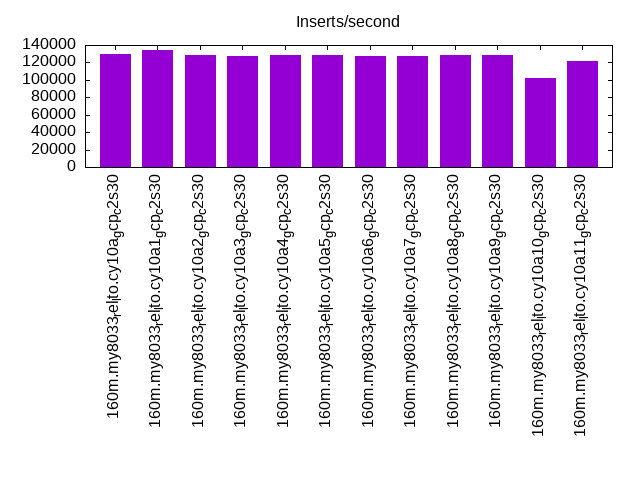

This is a report for the insert benchmark with 160M docs and 8 client(s). It is generated by scripts (bash, awk, sed) and Tufte might not be impressed. An overview of the insert benchmark is here and a short update is here. Below, by DBMS, I mean DBMS+version.config. An example is my8020.c10b40 where my means MySQL, 8020 is version 8.0.20 and c10b40 is the name for the configuration file.
The test server is a c2-standard-30 from GCP with 15 cores, hyperthreads disabled, 120G RAM, XFS + SW RAID 0 on 4 NVMe devices (1.5TB). The benchmark was run with 8 client and there were 1 or 3 connections per client (1 for queries or inserts without rate limits, 1+1 for rate limited inserts+deletes). There are 8 tables, client per table. It loads 160M rows without secondary indexes, creates secondary indexes, then inserts 80M rows with a delete per insert to avoid growing the table. It then does 3 read+write tests for 1800s each that do queries as fast as possible with 100, 500 and then 1000 inserts/second/client concurrent with the queries and 1000 deletes/second to avoid growing the table. The database is cached by InnoDB and the only IO is for writes.
The tested DBMS are:
The numbers are inserts/s for l.i0 and l.i1, indexed docs (or rows) /s for l.x and queries/s for q*.2. The values are the average rate over the entire test for inserts (IPS) and queries (QPS). The range of values for IPS and QPS is split into 3 parts: bottom 25%, middle 50%, top 25%. Values in the bottom 25% have a red background, values in the top 25% have a green background and values in the middle have no color. A gray background is used for values that can be ignored because the DBMS did not sustain the target insert rate. Red backgrounds are not used when the minimum value is within 80% of the max value.
| dbms | l.i0 | l.x | l.i1 | q100.1 | q500.1 | q1000.1 |
|---|---|---|---|---|---|---|
| 160m.my8033_rel_lto.cy10a_gcp_c2s30 | 686695 | 874863 | 129686 | 46219 | 56222 | 55118 |
| 160m.my8033_rel_lto.cy10a1_gcp_c2s30 | 680851 | 833854 | 134059 | 43306 | 44107 | 51603 |
| 160m.my8033_rel_lto.cy10a2_gcp_c2s30 | 689655 | 879670 | 128179 | 45592 | 56062 | 54652 |
| 160m.my8033_rel_lto.cy10a3_gcp_c2s30 | 683761 | 904520 | 127949 | 45887 | 56142 | 54849 |
| 160m.my8033_rel_lto.cy10a4_gcp_c2s30 | 686695 | 696087 | 128205 | 44241 | 54161 | 54278 |
| 160m.my8033_rel_lto.cy10a5_gcp_c2s30 | 683761 | 860753 | 128493 | 49343 | 55372 | 53956 |
| 160m.my8033_rel_lto.cy10a6_gcp_c2s30 | 686695 | 865405 | 127673 | 49286 | 55387 | 54077 |
| 160m.my8033_rel_lto.cy10a7_gcp_c2s30 | 680851 | 899438 | 127632 | 49106 | 55246 | 53732 |
| 160m.my8033_rel_lto.cy10a8_gcp_c2s30 | 689655 | 860753 | 128452 | 49397 | 55521 | 53959 |
| 160m.my8033_rel_lto.cy10a9_gcp_c2s30 | 683761 | 856150 | 128041 | 49388 | 55356 | 54029 |
| 160m.my8033_rel_lto.cy10a10_gcp_c2s30 | 675105 | 865405 | 101781 | 57243 | 56191 | 54386 |
| 160m.my8033_rel_lto.cy10a11_gcp_c2s30 | 677966 | 958683 | 121914 | 47811 | 54327 | 52418 |
This table has relative throughput, throughput for the DBMS relative to the DBMS in the first line, using the absolute throughput from the previous table.
| dbms | l.i0 | l.x | l.i1 | q100.1 | q500.1 | q1000.1 |
|---|---|---|---|---|---|---|
| 160m.my8033_rel_lto.cy10a_gcp_c2s30 | 1.00 | 1.00 | 1.00 | 1.00 | 1.00 | 1.00 |
| 160m.my8033_rel_lto.cy10a1_gcp_c2s30 | 0.99 | 0.95 | 1.03 | 0.94 | 0.78 | 0.94 |
| 160m.my8033_rel_lto.cy10a2_gcp_c2s30 | 1.00 | 1.01 | 0.99 | 0.99 | 1.00 | 0.99 |
| 160m.my8033_rel_lto.cy10a3_gcp_c2s30 | 1.00 | 1.03 | 0.99 | 0.99 | 1.00 | 1.00 |
| 160m.my8033_rel_lto.cy10a4_gcp_c2s30 | 1.00 | 0.80 | 0.99 | 0.96 | 0.96 | 0.98 |
| 160m.my8033_rel_lto.cy10a5_gcp_c2s30 | 1.00 | 0.98 | 0.99 | 1.07 | 0.98 | 0.98 |
| 160m.my8033_rel_lto.cy10a6_gcp_c2s30 | 1.00 | 0.99 | 0.98 | 1.07 | 0.99 | 0.98 |
| 160m.my8033_rel_lto.cy10a7_gcp_c2s30 | 0.99 | 1.03 | 0.98 | 1.06 | 0.98 | 0.97 |
| 160m.my8033_rel_lto.cy10a8_gcp_c2s30 | 1.00 | 0.98 | 0.99 | 1.07 | 0.99 | 0.98 |
| 160m.my8033_rel_lto.cy10a9_gcp_c2s30 | 1.00 | 0.98 | 0.99 | 1.07 | 0.98 | 0.98 |
| 160m.my8033_rel_lto.cy10a10_gcp_c2s30 | 0.98 | 0.99 | 0.78 | 1.24 | 1.00 | 0.99 |
| 160m.my8033_rel_lto.cy10a11_gcp_c2s30 | 0.99 | 1.10 | 0.94 | 1.03 | 0.97 | 0.95 |
This lists the average rate of inserts/s for the tests that do inserts concurrent with queries. For such tests the query rate is listed in the table above. The read+write tests are setup so that the insert rate should match the target rate every second. Cells that are not at least 95% of the target have a red background to indicate a failure to satisfy the target.
| dbms | q100.1 | q500.1 | q1000.1 |
|---|---|---|---|
| my8033_rel_lto.cy10a_gcp_c2s30 | 795 | 3980 | 7956 |
| my8033_rel_lto.cy10a1_gcp_c2s30 | 767 | 3913 | 7960 |
| my8033_rel_lto.cy10a2_gcp_c2s30 | 795 | 3978 | 7965 |
| my8033_rel_lto.cy10a3_gcp_c2s30 | 796 | 3978 | 7960 |
| my8033_rel_lto.cy10a4_gcp_c2s30 | 794 | 3978 | 7960 |
| my8033_rel_lto.cy10a5_gcp_c2s30 | 796 | 3978 | 7960 |
| my8033_rel_lto.cy10a6_gcp_c2s30 | 796 | 3978 | 7960 |
| my8033_rel_lto.cy10a7_gcp_c2s30 | 796 | 3978 | 7960 |
| my8033_rel_lto.cy10a8_gcp_c2s30 | 796 | 3978 | 7960 |
| my8033_rel_lto.cy10a9_gcp_c2s30 | 796 | 3978 | 7965 |
| my8033_rel_lto.cy10a10_gcp_c2s30 | 796 | 3978 | 7960 |
| my8033_rel_lto.cy10a11_gcp_c2s30 | 796 | 3980 | 7960 |
| target | 800 | 4000 | 8000 |
l.i0: load without secondary indexes. Graphs for performance per 1-second interval are here.
Average throughput:
Insert response time histogram: each cell has the percentage of responses that take <= the time in the header and max is the max response time in seconds. For the max column values in the top 25% of the range have a red background and in the bottom 25% of the range have a green background. The red background is not used when the min value is within 80% of the max value.
| dbms | 256us | 1ms | 4ms | 16ms | 64ms | 256ms | 1s | 4s | 16s | gt | max |
|---|---|---|---|---|---|---|---|---|---|---|---|
| my8033_rel_lto.cy10a_gcp_c2s30 | 34.062 | 65.861 | 0.032 | 0.030 | 0.014 | 0.223 | |||||
| my8033_rel_lto.cy10a1_gcp_c2s30 | 32.804 | 67.121 | 0.029 | 0.031 | 0.014 | 0.225 | |||||
| my8033_rel_lto.cy10a2_gcp_c2s30 | 34.101 | 65.825 | 0.036 | 0.024 | 0.014 | 0.247 | |||||
| my8033_rel_lto.cy10a3_gcp_c2s30 | 31.401 | 68.524 | 0.038 | 0.023 | 0.014 | nonzero | 0.260 | ||||
| my8033_rel_lto.cy10a4_gcp_c2s30 | 37.483 | 62.288 | 0.192 | 0.022 | 0.014 | 0.222 | |||||
| my8033_rel_lto.cy10a5_gcp_c2s30 | 31.220 | 68.705 | 0.036 | 0.025 | 0.014 | 0.240 | |||||
| my8033_rel_lto.cy10a6_gcp_c2s30 | 33.423 | 66.502 | 0.036 | 0.024 | 0.014 | 0.249 | |||||
| my8033_rel_lto.cy10a7_gcp_c2s30 | 26.498 | 73.423 | 0.035 | 0.030 | 0.014 | 0.250 | |||||
| my8033_rel_lto.cy10a8_gcp_c2s30 | 35.484 | 64.435 | 0.043 | 0.024 | 0.014 | 0.221 | |||||
| my8033_rel_lto.cy10a9_gcp_c2s30 | 29.483 | 70.444 | 0.036 | 0.023 | 0.014 | 0.235 | |||||
| my8033_rel_lto.cy10a10_gcp_c2s30 | 14.802 | 85.105 | 0.054 | 0.026 | 0.014 | 0.232 | |||||
| my8033_rel_lto.cy10a11_gcp_c2s30 | 28.062 | 71.830 | 0.054 | 0.039 | 0.013 | 0.002 | 0.283 |
Performance metrics for the DBMS listed above. Some are normalized by throughput, others are not. Legend for results is here.
ips qps rps rmbps wps wmbps rpq rkbpq wpi wkbpi csps cpups cspq cpupq dbgb1 dbgb2 rss maxop p50 p99 tag 686695 0 0 0.0 1136.7 131.1 0.000 0.000 0.002 0.195 164226 71.8 0.239 16 10.6 139.1 17.3 0.223 93931 73220 160m.my8033_rel_lto.cy10a_gcp_c2s30 680851 0 0 0.0 1132.3 129.7 0.000 0.000 0.002 0.195 155528 71.9 0.228 16 10.6 139.1 17.3 0.225 92689 72421 160m.my8033_rel_lto.cy10a1_gcp_c2s30 689655 0 0 0.0 1344.7 139.3 0.000 0.000 0.002 0.207 158048 72.6 0.229 16 10.6 139.1 17.3 0.247 93898 71623 160m.my8033_rel_lto.cy10a2_gcp_c2s30 683761 0 0 0.0 1336.3 135.4 0.000 0.000 0.002 0.203 165458 72.8 0.242 16 10.6 139.1 17.3 0.260 93698 73122 160m.my8033_rel_lto.cy10a3_gcp_c2s30 686695 0 0 0.0 634.2 128.8 0.000 0.000 0.001 0.192 185844 73.3 0.271 16 10.6 139.1 17.3 0.222 93699 74120 160m.my8033_rel_lto.cy10a4_gcp_c2s30 683761 0 0 0.0 1129.9 130.0 0.000 0.000 0.002 0.195 174663 72.9 0.255 16 10.6 139.1 17.3 0.240 93498 71723 160m.my8033_rel_lto.cy10a5_gcp_c2s30 686695 0 0 0.0 1132.9 132.1 0.000 0.000 0.002 0.197 169020 72.9 0.246 16 10.6 139.1 17.3 0.249 94198 71123 160m.my8033_rel_lto.cy10a6_gcp_c2s30 680851 0 0 0.0 1124.0 129.2 0.000 0.000 0.002 0.194 152305 72.9 0.224 16 10.6 139.1 17.3 0.250 93043 72422 160m.my8033_rel_lto.cy10a7_gcp_c2s30 689655 0 0 0.0 1136.5 131.1 0.000 0.000 0.002 0.195 167878 72.8 0.243 16 10.6 139.1 17.3 0.221 94199 73820 160m.my8033_rel_lto.cy10a8_gcp_c2s30 683761 0 0 0.0 1129.4 129.9 0.000 0.000 0.002 0.195 162085 72.9 0.237 16 10.6 139.1 17.3 0.235 93299 72123 160m.my8033_rel_lto.cy10a9_gcp_c2s30 675105 0 0 0.0 1118.9 125.1 0.000 0.000 0.002 0.190 135706 72.8 0.201 16 10.6 139.1 17.3 0.232 92000 71320 160m.my8033_rel_lto.cy10a10_gcp_c2s30 677966 0 0 0.0 3229.9 183.5 0.000 0.000 0.005 0.277 174458 72.6 0.257 16 10.6 27.1 17.3 0.283 92485 67427 160m.my8033_rel_lto.cy10a11_gcp_c2s30
l.x: create secondary indexes.
Average throughput:
Performance metrics for the DBMS listed above. Some are normalized by throughput, others are not. Legend for results is here.
ips qps rps rmbps wps wmbps rpq rkbpq wpi wkbpi csps cpups cspq cpupq dbgb1 dbgb2 rss maxop p50 p99 tag 874863 0 4451 283.0 17843.1 865.0 0.005 0.331 0.020 1.012 108045 80.1 0.123 14 23.5 152.1 27.0 0.006 NA NA 160m.my8033_rel_lto.cy10a_gcp_c2s30 833854 0 4217 268.1 17011.7 820.8 0.005 0.329 0.020 1.008 112083 79.9 0.134 14 23.5 152.1 26.6 0.004 NA NA 160m.my8033_rel_lto.cy10a1_gcp_c2s30 879670 0 4452 282.9 18359.2 876.0 0.005 0.329 0.021 1.020 80283 78.8 0.091 13 23.5 152.1 25.3 0.003 NA NA 160m.my8033_rel_lto.cy10a2_gcp_c2s30 904520 0 4576 291.0 18846.1 901.4 0.005 0.329 0.021 1.020 96094 79.7 0.106 13 23.5 152.1 25.7 0.004 NA NA 160m.my8033_rel_lto.cy10a3_gcp_c2s30 696087 0 3479 221.4 14370.0 678.6 0.005 0.326 0.021 0.998 190514 77.4 0.274 17 23.5 152.1 27.4 0.008 NA NA 160m.my8033_rel_lto.cy10a4_gcp_c2s30 860753 0 4331 275.3 17539.6 842.9 0.005 0.328 0.020 1.003 113206 82.3 0.132 14 23.5 152.1 26.5 0.005 NA NA 160m.my8033_rel_lto.cy10a5_gcp_c2s30 865405 0 4336 275.4 17672.3 847.0 0.005 0.326 0.020 1.002 112157 80.1 0.130 14 23.5 152.1 26.9 0.003 NA NA 160m.my8033_rel_lto.cy10a6_gcp_c2s30 899438 0 4578 291.0 18402.3 889.6 0.005 0.331 0.020 1.013 91097 81.1 0.101 14 23.5 152.1 25.2 0.003 NA NA 160m.my8033_rel_lto.cy10a7_gcp_c2s30 860753 0 4330 275.3 17534.6 843.7 0.005 0.328 0.020 1.004 108068 82.0 0.126 14 23.5 152.1 27.0 0.003 NA NA 160m.my8033_rel_lto.cy10a8_gcp_c2s30 856150 0 4331 275.3 17445.5 842.7 0.005 0.329 0.020 1.008 100250 81.5 0.117 14 23.5 152.1 26.9 0.004 NA NA 160m.my8033_rel_lto.cy10a9_gcp_c2s30 865405 0 4336 275.4 17682.0 845.7 0.005 0.326 0.020 1.001 95751 79.7 0.111 14 23.5 152.1 25.7 0.007 NA NA 160m.my8033_rel_lto.cy10a10_gcp_c2s30 958683 0 4858 308.7 19646.9 945.1 0.005 0.330 0.020 1.010 56978 71.9 0.059 11 23.5 40.1 27.1 0.005 NA NA 160m.my8033_rel_lto.cy10a11_gcp_c2s30
l.i1: continue load after secondary indexes created. Graphs for performance per 1-second interval are here.
Average throughput:
Insert response time histogram: each cell has the percentage of responses that take <= the time in the header and max is the max response time in seconds. For the max column values in the top 25% of the range have a red background and in the bottom 25% of the range have a green background. The red background is not used when the min value is within 80% of the max value.
| dbms | 256us | 1ms | 4ms | 16ms | 64ms | 256ms | 1s | 4s | 16s | gt | max |
|---|---|---|---|---|---|---|---|---|---|---|---|
| my8033_rel_lto.cy10a_gcp_c2s30 | 88.059 | 11.809 | 0.110 | 0.020 | 0.002 | 0.357 | |||||
| my8033_rel_lto.cy10a1_gcp_c2s30 | 90.541 | 9.374 | 0.058 | 0.026 | nonzero | 0.352 | |||||
| my8033_rel_lto.cy10a2_gcp_c2s30 | 87.059 | 12.839 | 0.080 | 0.020 | 0.002 | 0.359 | |||||
| my8033_rel_lto.cy10a3_gcp_c2s30 | 87.017 | 12.894 | 0.067 | 0.021 | 0.002 | 0.352 | |||||
| my8033_rel_lto.cy10a4_gcp_c2s30 | 83.615 | 16.339 | 0.029 | 0.017 | nonzero | 0.525 | |||||
| my8033_rel_lto.cy10a5_gcp_c2s30 | 87.607 | 12.242 | 0.126 | 0.023 | 0.002 | 0.316 | |||||
| my8033_rel_lto.cy10a6_gcp_c2s30 | 87.010 | 12.875 | 0.089 | 0.025 | 0.001 | 0.309 | |||||
| my8033_rel_lto.cy10a7_gcp_c2s30 | 87.215 | 12.639 | 0.120 | 0.025 | 0.001 | 0.328 | |||||
| my8033_rel_lto.cy10a8_gcp_c2s30 | 87.608 | 12.247 | 0.118 | 0.025 | 0.001 | 0.403 | |||||
| my8033_rel_lto.cy10a9_gcp_c2s30 | 87.402 | 12.451 | 0.120 | 0.025 | 0.001 | 0.451 | |||||
| my8033_rel_lto.cy10a10_gcp_c2s30 | 65.167 | 34.576 | 0.227 | 0.028 | 0.003 | 0.372 | |||||
| my8033_rel_lto.cy10a11_gcp_c2s30 | 83.595 | 16.325 | 0.053 | 0.021 | 0.004 | 0.002 | 1.929 |
Delete response time histogram: each cell has the percentage of responses that take <= the time in the header and max is the max response time in seconds. For the max column values in the top 25% of the range have a red background and in the bottom 25% of the range have a green background. The red background is not used when the min value is within 80% of the max value.
| dbms | 256us | 1ms | 4ms | 16ms | 64ms | 256ms | 1s | 4s | 16s | gt | max |
|---|---|---|---|---|---|---|---|---|---|---|---|
| my8033_rel_lto.cy10a_gcp_c2s30 | 88.909 | 10.984 | 0.092 | 0.014 | 0.001 | 0.358 | |||||
| my8033_rel_lto.cy10a1_gcp_c2s30 | 92.442 | 7.504 | 0.039 | 0.015 | 0.233 | ||||||
| my8033_rel_lto.cy10a2_gcp_c2s30 | 88.214 | 11.707 | 0.064 | 0.013 | 0.002 | 0.323 | |||||
| my8033_rel_lto.cy10a3_gcp_c2s30 | 88.180 | 11.754 | 0.051 | 0.014 | 0.001 | 0.302 | |||||
| my8033_rel_lto.cy10a4_gcp_c2s30 | 86.823 | 13.104 | 0.059 | 0.014 | nonzero | 0.521 | |||||
| my8033_rel_lto.cy10a5_gcp_c2s30 | 88.184 | 11.691 | 0.109 | 0.015 | 0.001 | 0.308 | |||||
| my8033_rel_lto.cy10a6_gcp_c2s30 | 87.693 | 12.236 | 0.056 | 0.015 | 0.001 | 0.299 | |||||
| my8033_rel_lto.cy10a7_gcp_c2s30 | 87.819 | 12.080 | 0.086 | 0.014 | 0.001 | 0.291 | |||||
| my8033_rel_lto.cy10a8_gcp_c2s30 | 88.181 | 11.718 | 0.086 | 0.015 | 0.001 | 0.303 | |||||
| my8033_rel_lto.cy10a9_gcp_c2s30 | 87.916 | 11.981 | 0.088 | 0.015 | 0.001 | 0.286 | |||||
| my8033_rel_lto.cy10a10_gcp_c2s30 | 77.255 | 22.590 | 0.138 | 0.015 | 0.002 | 0.375 | |||||
| my8033_rel_lto.cy10a11_gcp_c2s30 | 85.979 | 13.983 | 0.020 | 0.012 | 0.003 | 0.002 | 1.926 |
Performance metrics for the DBMS listed above. Some are normalized by throughput, others are not. Legend for results is here.
ips qps rps rmbps wps wmbps rpq rkbpq wpi wkbpi csps cpups cspq cpupq dbgb1 dbgb2 rss maxop p50 p99 tag 129686 0 149 2.3 7164.1 265.2 0.001 0.018 0.055 2.094 187748 85.0 1.448 98 58.5 205.4 86.9 0.357 16444 11991 160m.my8033_rel_lto.cy10a_gcp_c2s30 134059 0 588 9.2 8029.1 294.7 0.004 0.070 0.060 2.251 193607 84.4 1.444 94 89.3 253.3 86.9 0.352 17048 12483 160m.my8033_rel_lto.cy10a1_gcp_c2s30 128179 0 147 2.3 8839.2 311.5 0.001 0.018 0.069 2.488 188795 85.1 1.473 100 59.6 205.9 86.9 0.359 16233 11737 160m.my8033_rel_lto.cy10a2_gcp_c2s30 127949 0 147 2.3 8785.1 309.7 0.001 0.018 0.069 2.479 187299 85.2 1.464 100 58.9 205.2 86.9 0.352 16243 11737 160m.my8033_rel_lto.cy10a3_gcp_c2s30 128205 0 11 2.1 7109.5 276.0 0.000 0.017 0.055 2.204 178953 85.5 1.396 100 70.6 222.7 86.9 0.525 16182 12524 160m.my8033_rel_lto.cy10a4_gcp_c2s30 128493 0 236 3.7 6520.8 242.8 0.002 0.029 0.051 1.935 180435 85.1 1.404 99 45.0 187.0 68.2 0.316 16332 8790 160m.my8033_rel_lto.cy10a5_gcp_c2s30 127673 0 234 3.7 7433.2 268.3 0.002 0.029 0.058 2.152 180408 85.2 1.413 100 45.1 187.2 69.4 0.309 16232 8041 160m.my8033_rel_lto.cy10a6_gcp_c2s30 127632 0 234 3.7 6485.5 242.0 0.002 0.029 0.051 1.941 179112 85.3 1.403 100 45.0 187.0 68.3 0.328 16232 9340 160m.my8033_rel_lto.cy10a7_gcp_c2s30 128452 0 236 3.7 6518.1 242.9 0.002 0.029 0.051 1.937 180338 85.2 1.404 99 44.9 186.9 68.2 0.403 16299 7991 160m.my8033_rel_lto.cy10a8_gcp_c2s30 128041 0 235 3.7 6500.9 242.6 0.002 0.029 0.051 1.941 179478 85.2 1.402 100 44.9 186.9 68.1 0.451 16246 8441 160m.my8033_rel_lto.cy10a9_gcp_c2s30 101781 0 187 2.9 7461.0 293.6 0.002 0.029 0.073 2.954 189758 83.9 1.864 124 33.4 162.3 40.2 0.372 13335 5996 160m.my8033_rel_lto.cy10a10_gcp_c2s30 121914 0 224 3.5 17580.3 548.0 0.002 0.029 0.144 4.603 187065 84.6 1.534 104 45.2 75.1 72.4 1.929 15676 1998 160m.my8033_rel_lto.cy10a11_gcp_c2s30
q100.1: range queries with 100 insert/s per client. Graphs for performance per 1-second interval are here.
Average throughput:
Query response time histogram: each cell has the percentage of responses that take <= the time in the header and max is the max response time in seconds. For max values in the top 25% of the range have a red background and in the bottom 25% of the range have a green background. The red background is not used when the min value is within 80% of the max value.
| dbms | 256us | 1ms | 4ms | 16ms | 64ms | 256ms | 1s | 4s | 16s | gt | max |
|---|---|---|---|---|---|---|---|---|---|---|---|
| my8033_rel_lto.cy10a_gcp_c2s30 | 99.025 | 0.971 | 0.004 | nonzero | nonzero | 0.018 | |||||
| my8033_rel_lto.cy10a1_gcp_c2s30 | 98.063 | 1.931 | 0.006 | nonzero | nonzero | 0.035 | |||||
| my8033_rel_lto.cy10a2_gcp_c2s30 | 98.913 | 1.083 | 0.004 | nonzero | 0.015 | ||||||
| my8033_rel_lto.cy10a3_gcp_c2s30 | 98.968 | 1.027 | 0.004 | nonzero | nonzero | 0.018 | |||||
| my8033_rel_lto.cy10a4_gcp_c2s30 | 98.824 | 1.167 | 0.008 | nonzero | nonzero | 0.024 | |||||
| my8033_rel_lto.cy10a5_gcp_c2s30 | 99.284 | 0.712 | 0.003 | nonzero | nonzero | 0.016 | |||||
| my8033_rel_lto.cy10a6_gcp_c2s30 | 99.259 | 0.738 | 0.003 | nonzero | nonzero | 0.021 | |||||
| my8033_rel_lto.cy10a7_gcp_c2s30 | 99.295 | 0.702 | 0.003 | nonzero | nonzero | 0.024 | |||||
| my8033_rel_lto.cy10a8_gcp_c2s30 | 99.288 | 0.709 | 0.003 | nonzero | nonzero | 0.024 | |||||
| my8033_rel_lto.cy10a9_gcp_c2s30 | 99.311 | 0.686 | 0.003 | nonzero | 0.015 | ||||||
| my8033_rel_lto.cy10a10_gcp_c2s30 | 99.865 | 0.133 | 0.002 | nonzero | 0.010 | ||||||
| my8033_rel_lto.cy10a11_gcp_c2s30 | 99.002 | 0.995 | 0.003 | nonzero | 0.016 |
Insert response time histogram: each cell has the percentage of responses that take <= the time in the header and max is the max response time in seconds. For max values in the top 25% of the range have a red background and in the bottom 25% of the range have a green background. The red background is not used when the min value is within 80% of the max value.
| dbms | 256us | 1ms | 4ms | 16ms | 64ms | 256ms | 1s | 4s | 16s | gt | max |
|---|---|---|---|---|---|---|---|---|---|---|---|
| my8033_rel_lto.cy10a_gcp_c2s30 | 96.611 | 3.365 | 0.024 | 0.020 | |||||||
| my8033_rel_lto.cy10a1_gcp_c2s30 | 98.319 | 1.677 | 0.003 | 0.019 | |||||||
| my8033_rel_lto.cy10a2_gcp_c2s30 | 94.615 | 5.333 | 0.052 | 0.022 | |||||||
| my8033_rel_lto.cy10a3_gcp_c2s30 | 95.212 | 4.747 | 0.042 | 0.020 | |||||||
| my8033_rel_lto.cy10a4_gcp_c2s30 | 97.500 | 2.490 | 0.007 | 0.003 | 0.093 | ||||||
| my8033_rel_lto.cy10a5_gcp_c2s30 | 95.354 | 4.639 | 0.007 | 0.017 | |||||||
| my8033_rel_lto.cy10a6_gcp_c2s30 | 93.861 | 6.118 | 0.021 | 0.022 | |||||||
| my8033_rel_lto.cy10a7_gcp_c2s30 | 95.340 | 4.649 | 0.010 | 0.018 | |||||||
| my8033_rel_lto.cy10a8_gcp_c2s30 | 95.323 | 4.670 | 0.007 | 0.016 | |||||||
| my8033_rel_lto.cy10a9_gcp_c2s30 | 96.896 | 3.101 | 0.003 | 0.018 | |||||||
| my8033_rel_lto.cy10a10_gcp_c2s30 | 94.181 | 5.819 | 0.015 | ||||||||
| my8033_rel_lto.cy10a11_gcp_c2s30 | 95.872 | 4.094 | 0.035 | 0.022 |
Delete response time histogram: each cell has the percentage of responses that take <= the time in the header and max is the max response time in seconds. For max values in the top 25% of the range have a red background and in the bottom 25% of the range have a green background. The red background is not used when the min value is within 80% of the max value.
| dbms | 256us | 1ms | 4ms | 16ms | 64ms | 256ms | 1s | 4s | 16s | gt | max |
|---|---|---|---|---|---|---|---|---|---|---|---|
| my8033_rel_lto.cy10a_gcp_c2s30 | 97.597 | 2.385 | 0.017 | 0.020 | |||||||
| my8033_rel_lto.cy10a1_gcp_c2s30 | 99.278 | 0.719 | 0.003 | 0.016 | |||||||
| my8033_rel_lto.cy10a2_gcp_c2s30 | 96.597 | 3.389 | 0.014 | 0.018 | |||||||
| my8033_rel_lto.cy10a3_gcp_c2s30 | 96.625 | 3.354 | 0.021 | 0.019 | |||||||
| my8033_rel_lto.cy10a4_gcp_c2s30 | 97.427 | 2.549 | 0.021 | 0.003 | 0.093 | ||||||
| my8033_rel_lto.cy10a5_gcp_c2s30 | 97.128 | 2.872 | 0.015 | ||||||||
| my8033_rel_lto.cy10a6_gcp_c2s30 | 96.188 | 3.799 | 0.014 | 0.022 | |||||||
| my8033_rel_lto.cy10a7_gcp_c2s30 | 96.993 | 3.007 | 0.015 | ||||||||
| my8033_rel_lto.cy10a8_gcp_c2s30 | 96.833 | 3.163 | 0.003 | 0.016 | |||||||
| my8033_rel_lto.cy10a9_gcp_c2s30 | 97.896 | 2.104 | 0.015 | ||||||||
| my8033_rel_lto.cy10a10_gcp_c2s30 | 96.483 | 3.517 | 0.012 | ||||||||
| my8033_rel_lto.cy10a11_gcp_c2s30 | 97.142 | 2.851 | 0.007 | 0.019 |
Performance metrics for the DBMS listed above. Some are normalized by throughput, others are not. Legend for results is here.
ips qps rps rmbps wps wmbps rpq rkbpq wpi wkbpi csps cpups cspq cpupq dbgb1 dbgb2 rss maxop p50 p99 tag 795 46219 0 0.0 2775.0 85.5 0.000 0.000 3.490 110.150 176322 69.6 3.815 226 58.5 187.2 86.9 0.018 5674 5341 160m.my8033_rel_lto.cy10a_gcp_c2s30 767 43306 1397 21.8 3184.1 89.8 0.032 0.516 4.151 119.939 171743 72.1 3.966 250 89.3 238.6 87.0 0.035 5434 4651 160m.my8033_rel_lto.cy10a1_gcp_c2s30 795 45592 0 0.0 3296.1 100.3 0.000 0.000 4.146 129.222 175480 70.1 3.849 231 59.6 188.3 86.9 0.015 5674 5370 160m.my8033_rel_lto.cy10a2_gcp_c2s30 796 45887 0 0.0 3242.2 98.7 0.000 0.000 4.076 127.047 176120 69.9 3.838 228 58.9 187.6 86.9 0.018 5706 5356 160m.my8033_rel_lto.cy10a3_gcp_c2s30 794 44241 26 4.8 3668.3 125.1 0.001 0.111 4.619 161.308 165472 73.8 3.740 250 70.6 212.2 86.9 0.024 5548 5162 160m.my8033_rel_lto.cy10a4_gcp_c2s30 796 49343 0 0.0 1881.5 57.2 0.000 0.000 2.365 73.625 189905 64.3 3.849 195 45.0 173.6 68.2 0.016 5738 5434 160m.my8033_rel_lto.cy10a5_gcp_c2s30 796 49286 0 0.0 2340.1 70.0 0.000 0.000 2.940 90.004 190222 64.5 3.860 196 45.1 173.7 69.4 0.021 5708 5418 160m.my8033_rel_lto.cy10a6_gcp_c2s30 796 49106 0 0.0 1875.2 57.0 0.000 0.000 2.357 73.424 189174 64.3 3.852 196 45.0 173.6 68.3 0.024 5708 5418 160m.my8033_rel_lto.cy10a7_gcp_c2s30 796 49397 0 0.0 1874.6 57.0 0.000 0.000 2.357 73.359 189981 64.2 3.846 195 44.9 173.6 68.2 0.024 5739 5407 160m.my8033_rel_lto.cy10a8_gcp_c2s30 796 49388 0 0.0 1873.5 56.9 0.000 0.000 2.355 73.304 190392 64.2 3.855 195 44.9 173.5 68.1 0.015 5754 5436 160m.my8033_rel_lto.cy10a9_gcp_c2s30 796 57243 0 0.0 585.9 16.6 0.000 0.000 0.736 21.390 220634 54.1 3.854 142 33.4 162.3 40.2 0.010 7195 6942 160m.my8033_rel_lto.cy10a10_gcp_c2s30 796 47811 0 0.0 5506.5 158.1 0.000 0.000 6.922 203.468 190998 65.2 3.995 205 45.2 61.9 72.4 0.016 5530 5146 160m.my8033_rel_lto.cy10a11_gcp_c2s30
q500.1: range queries with 500 insert/s per client. Graphs for performance per 1-second interval are here.
Average throughput:
Query response time histogram: each cell has the percentage of responses that take <= the time in the header and max is the max response time in seconds. For max values in the top 25% of the range have a red background and in the bottom 25% of the range have a green background. The red background is not used when the min value is within 80% of the max value.
| dbms | 256us | 1ms | 4ms | 16ms | 64ms | 256ms | 1s | 4s | 16s | gt | max |
|---|---|---|---|---|---|---|---|---|---|---|---|
| my8033_rel_lto.cy10a_gcp_c2s30 | 99.774 | 0.208 | 0.017 | 0.002 | nonzero | 0.030 | |||||
| my8033_rel_lto.cy10a1_gcp_c2s30 | 98.713 | 1.275 | 0.011 | 0.001 | 0.015 | ||||||
| my8033_rel_lto.cy10a2_gcp_c2s30 | 99.766 | 0.214 | 0.018 | 0.002 | nonzero | 0.025 | |||||
| my8033_rel_lto.cy10a3_gcp_c2s30 | 99.776 | 0.205 | 0.017 | 0.002 | nonzero | 0.027 | |||||
| my8033_rel_lto.cy10a4_gcp_c2s30 | 99.580 | 0.400 | 0.018 | 0.002 | nonzero | 0.028 | |||||
| my8033_rel_lto.cy10a5_gcp_c2s30 | 99.747 | 0.233 | 0.018 | 0.002 | nonzero | 0.027 | |||||
| my8033_rel_lto.cy10a6_gcp_c2s30 | 99.743 | 0.237 | 0.018 | 0.002 | nonzero | 0.022 | |||||
| my8033_rel_lto.cy10a7_gcp_c2s30 | 99.751 | 0.230 | 0.017 | 0.002 | nonzero | 0.028 | |||||
| my8033_rel_lto.cy10a8_gcp_c2s30 | 99.751 | 0.229 | 0.018 | 0.002 | nonzero | 0.025 | |||||
| my8033_rel_lto.cy10a9_gcp_c2s30 | 99.746 | 0.236 | 0.017 | 0.002 | nonzero | 0.024 | |||||
| my8033_rel_lto.cy10a10_gcp_c2s30 | 99.770 | 0.209 | 0.019 | 0.002 | nonzero | 0.027 | |||||
| my8033_rel_lto.cy10a11_gcp_c2s30 | 99.677 | 0.303 | 0.018 | 0.002 | nonzero | 0.026 |
Insert response time histogram: each cell has the percentage of responses that take <= the time in the header and max is the max response time in seconds. For max values in the top 25% of the range have a red background and in the bottom 25% of the range have a green background. The red background is not used when the min value is within 80% of the max value.
| dbms | 256us | 1ms | 4ms | 16ms | 64ms | 256ms | 1s | 4s | 16s | gt | max |
|---|---|---|---|---|---|---|---|---|---|---|---|
| my8033_rel_lto.cy10a_gcp_c2s30 | 73.484 | 25.579 | 0.937 | 0.037 | |||||||
| my8033_rel_lto.cy10a1_gcp_c2s30 | 95.025 | 4.964 | 0.011 | 0.021 | |||||||
| my8033_rel_lto.cy10a2_gcp_c2s30 | 70.983 | 27.910 | 1.107 | 0.035 | |||||||
| my8033_rel_lto.cy10a3_gcp_c2s30 | 72.351 | 26.615 | 1.035 | 0.038 | |||||||
| my8033_rel_lto.cy10a4_gcp_c2s30 | 79.584 | 19.746 | 0.670 | 0.041 | |||||||
| my8033_rel_lto.cy10a5_gcp_c2s30 | 68.731 | 30.178 | 1.091 | 0.035 | |||||||
| my8033_rel_lto.cy10a6_gcp_c2s30 | 70.044 | 28.837 | 1.119 | 0.041 | |||||||
| my8033_rel_lto.cy10a7_gcp_c2s30 | 71.913 | 26.953 | 1.133 | 0.037 | |||||||
| my8033_rel_lto.cy10a8_gcp_c2s30 | 71.326 | 27.615 | 1.058 | 0.041 | |||||||
| my8033_rel_lto.cy10a9_gcp_c2s30 | 72.595 | 26.386 | 1.019 | 0.039 | |||||||
| my8033_rel_lto.cy10a10_gcp_c2s30 | 71.690 | 27.102 | 1.208 | 0.038 | |||||||
| my8033_rel_lto.cy10a11_gcp_c2s30 | 71.551 | 27.397 | 1.053 | 0.040 |
Delete response time histogram: each cell has the percentage of responses that take <= the time in the header and max is the max response time in seconds. For max values in the top 25% of the range have a red background and in the bottom 25% of the range have a green background. The red background is not used when the min value is within 80% of the max value.
| dbms | 256us | 1ms | 4ms | 16ms | 64ms | 256ms | 1s | 4s | 16s | gt | max |
|---|---|---|---|---|---|---|---|---|---|---|---|
| my8033_rel_lto.cy10a_gcp_c2s30 | 80.062 | 19.348 | 0.590 | 0.043 | |||||||
| my8033_rel_lto.cy10a1_gcp_c2s30 | 98.312 | 1.682 | 0.006 | 0.023 | |||||||
| my8033_rel_lto.cy10a2_gcp_c2s30 | 77.987 | 21.290 | 0.723 | 0.034 | |||||||
| my8033_rel_lto.cy10a3_gcp_c2s30 | 79.022 | 20.316 | 0.662 | 0.034 | |||||||
| my8033_rel_lto.cy10a4_gcp_c2s30 | 84.763 | 14.784 | 0.453 | 0.042 | |||||||
| my8033_rel_lto.cy10a5_gcp_c2s30 | 75.721 | 23.587 | 0.692 | 0.038 | |||||||
| my8033_rel_lto.cy10a6_gcp_c2s30 | 76.645 | 22.606 | 0.749 | 0.035 | |||||||
| my8033_rel_lto.cy10a7_gcp_c2s30 | 78.990 | 20.266 | 0.744 | 0.042 | |||||||
| my8033_rel_lto.cy10a8_gcp_c2s30 | 77.961 | 21.347 | 0.692 | 0.032 | |||||||
| my8033_rel_lto.cy10a9_gcp_c2s30 | 79.295 | 20.060 | 0.644 | 0.036 | |||||||
| my8033_rel_lto.cy10a10_gcp_c2s30 | 78.667 | 20.540 | 0.793 | 0.039 | |||||||
| my8033_rel_lto.cy10a11_gcp_c2s30 | 78.126 | 21.181 | 0.693 | 0.035 |
Performance metrics for the DBMS listed above. Some are normalized by throughput, others are not. Legend for results is here.
ips qps rps rmbps wps wmbps rpq rkbpq wpi wkbpi csps cpups cspq cpupq dbgb1 dbgb2 rss maxop p50 p99 tag 3980 56222 0 0.0 1053.0 31.8 0.000 0.000 0.265 8.187 217455 55.9 3.868 149 58.5 187.2 86.9 0.030 7064 6939 160m.my8033_rel_lto.cy10a_gcp_c2s30 3913 44107 859 13.4 4131.4 127.0 0.019 0.312 1.056 33.241 174457 74.2 3.955 252 89.3 239.1 87.0 0.015 5514 4936 160m.my8033_rel_lto.cy10a1_gcp_c2s30 3978 56062 0 0.0 1035.6 31.3 0.000 0.000 0.260 8.060 216874 56.0 3.868 150 59.6 188.3 86.9 0.025 7064 6936 160m.my8033_rel_lto.cy10a2_gcp_c2s30 3978 56142 0 0.0 991.2 30.2 0.000 0.000 0.249 7.763 217100 56.0 3.867 150 58.9 187.6 86.9 0.027 7048 6905 160m.my8033_rel_lto.cy10a3_gcp_c2s30 3978 54161 17 0.6 1412.0 53.5 0.000 0.010 0.355 13.763 215153 57.6 3.972 160 70.6 199.4 86.9 0.028 6920 5418 160m.my8033_rel_lto.cy10a4_gcp_c2s30 3978 55372 0 0.0 756.6 23.6 0.000 0.000 0.190 6.071 213378 56.0 3.854 152 45.0 173.6 68.2 0.027 6952 6841 160m.my8033_rel_lto.cy10a5_gcp_c2s30 3978 55387 0 0.0 806.4 24.9 0.000 0.000 0.203 6.421 213642 56.0 3.857 152 45.1 173.7 69.4 0.022 6943 6841 160m.my8033_rel_lto.cy10a6_gcp_c2s30 3978 55246 0 0.0 766.9 23.9 0.000 0.000 0.193 6.149 212886 56.1 3.853 152 45.0 173.6 68.3 0.028 6920 6809 160m.my8033_rel_lto.cy10a7_gcp_c2s30 3978 55521 0 0.0 757.7 23.6 0.000 0.000 0.190 6.075 213969 56.1 3.854 152 44.9 173.6 68.2 0.025 6955 6841 160m.my8033_rel_lto.cy10a8_gcp_c2s30 3978 55356 0 0.0 754.9 23.6 0.000 0.000 0.190 6.062 213333 56.1 3.854 152 44.9 173.5 68.1 0.024 6936 6827 160m.my8033_rel_lto.cy10a9_gcp_c2s30 3978 56191 0 0.0 248.0 9.3 0.000 0.000 0.062 2.386 215116 55.9 3.828 149 33.4 162.3 40.2 0.027 7080 6955 160m.my8033_rel_lto.cy10a10_gcp_c2s30 3980 54327 0 0.0 2296.3 66.4 0.000 0.000 0.577 17.072 213629 56.1 3.932 155 45.2 61.9 72.4 0.026 6825 6713 160m.my8033_rel_lto.cy10a11_gcp_c2s30
q1000.1: range queries with 1000 insert/s per client. Graphs for performance per 1-second interval are here.
Average throughput:
Query response time histogram: each cell has the percentage of responses that take <= the time in the header and max is the max response time in seconds. For max values in the top 25% of the range have a red background and in the bottom 25% of the range have a green background. The red background is not used when the min value is within 80% of the max value.
| dbms | 256us | 1ms | 4ms | 16ms | 64ms | 256ms | 1s | 4s | 16s | gt | max |
|---|---|---|---|---|---|---|---|---|---|---|---|
| my8033_rel_lto.cy10a_gcp_c2s30 | 99.678 | 0.275 | 0.043 | 0.003 | nonzero | 0.020 | |||||
| my8033_rel_lto.cy10a1_gcp_c2s30 | 99.400 | 0.557 | 0.037 | 0.005 | nonzero | nonzero | 0.220 | ||||
| my8033_rel_lto.cy10a2_gcp_c2s30 | 99.669 | 0.292 | 0.035 | 0.003 | nonzero | 0.027 | |||||
| my8033_rel_lto.cy10a3_gcp_c2s30 | 99.660 | 0.292 | 0.045 | 0.003 | nonzero | 0.024 | |||||
| my8033_rel_lto.cy10a4_gcp_c2s30 | 99.595 | 0.359 | 0.041 | 0.005 | nonzero | 0.029 | |||||
| my8033_rel_lto.cy10a5_gcp_c2s30 | 99.639 | 0.318 | 0.040 | 0.003 | nonzero | 0.020 | |||||
| my8033_rel_lto.cy10a6_gcp_c2s30 | 99.603 | 0.339 | 0.055 | 0.004 | nonzero | 0.025 | |||||
| my8033_rel_lto.cy10a7_gcp_c2s30 | 99.624 | 0.333 | 0.040 | 0.003 | nonzero | 0.027 | |||||
| my8033_rel_lto.cy10a8_gcp_c2s30 | 99.619 | 0.331 | 0.046 | 0.004 | nonzero | 0.024 | |||||
| my8033_rel_lto.cy10a9_gcp_c2s30 | 99.641 | 0.317 | 0.039 | 0.003 | nonzero | 0.024 | |||||
| my8033_rel_lto.cy10a10_gcp_c2s30 | 99.616 | 0.340 | 0.039 | 0.005 | nonzero | 0.023 | |||||
| my8033_rel_lto.cy10a11_gcp_c2s30 | 99.473 | 0.476 | 0.047 | 0.004 | nonzero | 0.024 |
Insert response time histogram: each cell has the percentage of responses that take <= the time in the header and max is the max response time in seconds. For max values in the top 25% of the range have a red background and in the bottom 25% of the range have a green background. The red background is not used when the min value is within 80% of the max value.
| dbms | 256us | 1ms | 4ms | 16ms | 64ms | 256ms | 1s | 4s | 16s | gt | max |
|---|---|---|---|---|---|---|---|---|---|---|---|
| my8033_rel_lto.cy10a_gcp_c2s30 | 70.203 | 28.626 | 1.171 | 0.048 | |||||||
| my8033_rel_lto.cy10a1_gcp_c2s30 | 75.612 | 24.280 | 0.108 | nonzero | 0.222 | ||||||
| my8033_rel_lto.cy10a2_gcp_c2s30 | 76.680 | 22.308 | 1.012 | 0.049 | |||||||
| my8033_rel_lto.cy10a3_gcp_c2s30 | 69.206 | 29.466 | 1.328 | 0.040 | |||||||
| my8033_rel_lto.cy10a4_gcp_c2s30 | 76.472 | 22.624 | 0.904 | 0.039 | |||||||
| my8033_rel_lto.cy10a5_gcp_c2s30 | 73.489 | 25.233 | 1.278 | 0.047 | |||||||
| my8033_rel_lto.cy10a6_gcp_c2s30 | 63.179 | 35.147 | 1.675 | 0.049 | |||||||
| my8033_rel_lto.cy10a7_gcp_c2s30 | 73.265 | 25.423 | 1.312 | 0.046 | |||||||
| my8033_rel_lto.cy10a8_gcp_c2s30 | 67.869 | 30.683 | 1.448 | 0.049 | |||||||
| my8033_rel_lto.cy10a9_gcp_c2s30 | 73.800 | 25.048 | 1.152 | 0.047 | |||||||
| my8033_rel_lto.cy10a10_gcp_c2s30 | 74.873 | 23.768 | 1.359 | 0.044 | |||||||
| my8033_rel_lto.cy10a11_gcp_c2s30 | 69.434 | 29.251 | 1.315 | 0.049 |
Delete response time histogram: each cell has the percentage of responses that take <= the time in the header and max is the max response time in seconds. For max values in the top 25% of the range have a red background and in the bottom 25% of the range have a green background. The red background is not used when the min value is within 80% of the max value.
| dbms | 256us | 1ms | 4ms | 16ms | 64ms | 256ms | 1s | 4s | 16s | gt | max |
|---|---|---|---|---|---|---|---|---|---|---|---|
| my8033_rel_lto.cy10a_gcp_c2s30 | 76.866 | 22.321 | 0.813 | 0.039 | |||||||
| my8033_rel_lto.cy10a1_gcp_c2s30 | 81.846 | 18.079 | 0.074 | 0.001 | 0.250 | ||||||
| my8033_rel_lto.cy10a2_gcp_c2s30 | 82.029 | 17.258 | 0.713 | 0.035 | |||||||
| my8033_rel_lto.cy10a3_gcp_c2s30 | 76.095 | 22.987 | 0.918 | 0.041 | |||||||
| my8033_rel_lto.cy10a4_gcp_c2s30 | 81.353 | 18.002 | 0.645 | 0.038 | |||||||
| my8033_rel_lto.cy10a5_gcp_c2s30 | 79.861 | 19.237 | 0.901 | 0.039 | |||||||
| my8033_rel_lto.cy10a6_gcp_c2s30 | 70.867 | 27.962 | 1.171 | 0.052 | |||||||
| my8033_rel_lto.cy10a7_gcp_c2s30 | 79.291 | 19.750 | 0.958 | 0.041 | |||||||
| my8033_rel_lto.cy10a8_gcp_c2s30 | 75.346 | 23.640 | 1.014 | 0.040 | |||||||
| my8033_rel_lto.cy10a9_gcp_c2s30 | 79.858 | 19.325 | 0.817 | 0.045 | |||||||
| my8033_rel_lto.cy10a10_gcp_c2s30 | 81.191 | 17.872 | 0.937 | 0.040 | |||||||
| my8033_rel_lto.cy10a11_gcp_c2s30 | 76.380 | 22.686 | 0.934 | 0.038 |
Performance metrics for the DBMS listed above. Some are normalized by throughput, others are not. Legend for results is here.
ips qps rps rmbps wps wmbps rpq rkbpq wpi wkbpi csps cpups cspq cpupq dbgb1 dbgb2 rss maxop p50 p99 tag 7956 55118 0 0.0 947.0 31.0 0.000 0.000 0.119 3.992 209858 58.0 3.807 158 58.5 187.2 86.9 0.020 6922 6793 160m.my8033_rel_lto.cy10a_gcp_c2s30 7960 51603 131 2.1 1847.2 57.2 0.003 0.041 0.232 7.359 200646 62.2 3.888 181 89.3 218.7 86.9 0.220 6793 5391 160m.my8033_rel_lto.cy10a1_gcp_c2s30 7965 54652 0 0.0 1224.3 38.7 0.000 0.000 0.154 4.970 209561 58.3 3.834 160 59.6 188.3 86.9 0.027 6825 6700 160m.my8033_rel_lto.cy10a2_gcp_c2s30 7960 54849 0 0.0 1243.6 39.2 0.000 0.000 0.156 5.048 209567 58.2 3.821 159 58.9 187.6 86.9 0.024 6873 6761 160m.my8033_rel_lto.cy10a3_gcp_c2s30 7960 54278 33 1.0 874.7 27.8 0.001 0.018 0.110 3.572 209539 58.2 3.860 161 70.6 199.4 86.9 0.029 6825 6682 160m.my8033_rel_lto.cy10a4_gcp_c2s30 7960 53956 0 0.0 1046.0 34.0 0.000 0.000 0.131 4.378 205916 58.5 3.816 163 45.0 173.6 68.2 0.020 6779 6665 160m.my8033_rel_lto.cy10a5_gcp_c2s30 7960 54077 0 0.0 993.0 32.6 0.000 0.000 0.125 4.193 205908 58.2 3.808 161 45.1 173.8 69.4 0.025 6777 6648 160m.my8033_rel_lto.cy10a6_gcp_c2s30 7960 53732 0 0.0 1026.3 33.5 0.000 0.000 0.129 4.305 205336 58.6 3.821 164 45.0 173.6 68.3 0.027 6735 6617 160m.my8033_rel_lto.cy10a7_gcp_c2s30 7960 53959 0 0.0 1036.3 33.8 0.000 0.000 0.130 4.344 205708 58.4 3.812 162 44.9 173.6 68.2 0.024 6777 6665 160m.my8033_rel_lto.cy10a8_gcp_c2s30 7965 54029 0 0.0 1047.7 34.0 0.000 0.000 0.132 4.376 206123 58.6 3.815 163 44.9 173.5 68.1 0.024 6760 6633 160m.my8033_rel_lto.cy10a9_gcp_c2s30 7960 54386 0 0.0 1193.8 38.2 0.000 0.000 0.150 4.916 209018 58.4 3.843 161 33.4 162.3 40.2 0.023 6840 6633 160m.my8033_rel_lto.cy10a10_gcp_c2s30 7960 52418 0 0.0 3975.7 115.5 0.000 0.000 0.499 14.855 208323 59.1 3.974 169 45.2 61.9 72.4 0.024 6569 6441 160m.my8033_rel_lto.cy10a11_gcp_c2s30
l.i0: load without secondary indexes
Performance metrics for all DBMS, not just the ones listed above. Some are normalized by throughput, others are not. Legend for results is here.
ips qps rps rmbps wps wmbps rpq rkbpq wpi wkbpi csps cpups cspq cpupq dbgb1 dbgb2 rss maxop p50 p99 tag 686695 0 0 0.0 1136.7 131.1 0.000 0.000 0.002 0.195 164226 71.8 0.239 16 10.6 139.1 17.3 0.223 93931 73220 160m.my8033_rel_lto.cy10a_gcp_c2s30 680851 0 0 0.0 1132.3 129.7 0.000 0.000 0.002 0.195 155528 71.9 0.228 16 10.6 139.1 17.3 0.225 92689 72421 160m.my8033_rel_lto.cy10a1_gcp_c2s30 689655 0 0 0.0 1344.7 139.3 0.000 0.000 0.002 0.207 158048 72.6 0.229 16 10.6 139.1 17.3 0.247 93898 71623 160m.my8033_rel_lto.cy10a2_gcp_c2s30 683761 0 0 0.0 1336.3 135.4 0.000 0.000 0.002 0.203 165458 72.8 0.242 16 10.6 139.1 17.3 0.260 93698 73122 160m.my8033_rel_lto.cy10a3_gcp_c2s30 686695 0 0 0.0 634.2 128.8 0.000 0.000 0.001 0.192 185844 73.3 0.271 16 10.6 139.1 17.3 0.222 93699 74120 160m.my8033_rel_lto.cy10a4_gcp_c2s30 683761 0 0 0.0 1129.9 130.0 0.000 0.000 0.002 0.195 174663 72.9 0.255 16 10.6 139.1 17.3 0.240 93498 71723 160m.my8033_rel_lto.cy10a5_gcp_c2s30 686695 0 0 0.0 1132.9 132.1 0.000 0.000 0.002 0.197 169020 72.9 0.246 16 10.6 139.1 17.3 0.249 94198 71123 160m.my8033_rel_lto.cy10a6_gcp_c2s30 680851 0 0 0.0 1124.0 129.2 0.000 0.000 0.002 0.194 152305 72.9 0.224 16 10.6 139.1 17.3 0.250 93043 72422 160m.my8033_rel_lto.cy10a7_gcp_c2s30 689655 0 0 0.0 1136.5 131.1 0.000 0.000 0.002 0.195 167878 72.8 0.243 16 10.6 139.1 17.3 0.221 94199 73820 160m.my8033_rel_lto.cy10a8_gcp_c2s30 683761 0 0 0.0 1129.4 129.9 0.000 0.000 0.002 0.195 162085 72.9 0.237 16 10.6 139.1 17.3 0.235 93299 72123 160m.my8033_rel_lto.cy10a9_gcp_c2s30 675105 0 0 0.0 1118.9 125.1 0.000 0.000 0.002 0.190 135706 72.8 0.201 16 10.6 139.1 17.3 0.232 92000 71320 160m.my8033_rel_lto.cy10a10_gcp_c2s30 677966 0 0 0.0 3229.9 183.5 0.000 0.000 0.005 0.277 174458 72.6 0.257 16 10.6 27.1 17.3 0.283 92485 67427 160m.my8033_rel_lto.cy10a11_gcp_c2s30
l.x: create secondary indexes
Performance metrics for all DBMS, not just the ones listed above. Some are normalized by throughput, others are not. Legend for results is here.
ips qps rps rmbps wps wmbps rpq rkbpq wpi wkbpi csps cpups cspq cpupq dbgb1 dbgb2 rss maxop p50 p99 tag 874863 0 4451 283.0 17843.1 865.0 0.005 0.331 0.020 1.012 108045 80.1 0.123 14 23.5 152.1 27.0 0.006 NA NA 160m.my8033_rel_lto.cy10a_gcp_c2s30 833854 0 4217 268.1 17011.7 820.8 0.005 0.329 0.020 1.008 112083 79.9 0.134 14 23.5 152.1 26.6 0.004 NA NA 160m.my8033_rel_lto.cy10a1_gcp_c2s30 879670 0 4452 282.9 18359.2 876.0 0.005 0.329 0.021 1.020 80283 78.8 0.091 13 23.5 152.1 25.3 0.003 NA NA 160m.my8033_rel_lto.cy10a2_gcp_c2s30 904520 0 4576 291.0 18846.1 901.4 0.005 0.329 0.021 1.020 96094 79.7 0.106 13 23.5 152.1 25.7 0.004 NA NA 160m.my8033_rel_lto.cy10a3_gcp_c2s30 696087 0 3479 221.4 14370.0 678.6 0.005 0.326 0.021 0.998 190514 77.4 0.274 17 23.5 152.1 27.4 0.008 NA NA 160m.my8033_rel_lto.cy10a4_gcp_c2s30 860753 0 4331 275.3 17539.6 842.9 0.005 0.328 0.020 1.003 113206 82.3 0.132 14 23.5 152.1 26.5 0.005 NA NA 160m.my8033_rel_lto.cy10a5_gcp_c2s30 865405 0 4336 275.4 17672.3 847.0 0.005 0.326 0.020 1.002 112157 80.1 0.130 14 23.5 152.1 26.9 0.003 NA NA 160m.my8033_rel_lto.cy10a6_gcp_c2s30 899438 0 4578 291.0 18402.3 889.6 0.005 0.331 0.020 1.013 91097 81.1 0.101 14 23.5 152.1 25.2 0.003 NA NA 160m.my8033_rel_lto.cy10a7_gcp_c2s30 860753 0 4330 275.3 17534.6 843.7 0.005 0.328 0.020 1.004 108068 82.0 0.126 14 23.5 152.1 27.0 0.003 NA NA 160m.my8033_rel_lto.cy10a8_gcp_c2s30 856150 0 4331 275.3 17445.5 842.7 0.005 0.329 0.020 1.008 100250 81.5 0.117 14 23.5 152.1 26.9 0.004 NA NA 160m.my8033_rel_lto.cy10a9_gcp_c2s30 865405 0 4336 275.4 17682.0 845.7 0.005 0.326 0.020 1.001 95751 79.7 0.111 14 23.5 152.1 25.7 0.007 NA NA 160m.my8033_rel_lto.cy10a10_gcp_c2s30 958683 0 4858 308.7 19646.9 945.1 0.005 0.330 0.020 1.010 56978 71.9 0.059 11 23.5 40.1 27.1 0.005 NA NA 160m.my8033_rel_lto.cy10a11_gcp_c2s30
l.i1: continue load after secondary indexes created
Performance metrics for all DBMS, not just the ones listed above. Some are normalized by throughput, others are not. Legend for results is here.
ips qps rps rmbps wps wmbps rpq rkbpq wpi wkbpi csps cpups cspq cpupq dbgb1 dbgb2 rss maxop p50 p99 tag 129686 0 149 2.3 7164.1 265.2 0.001 0.018 0.055 2.094 187748 85.0 1.448 98 58.5 205.4 86.9 0.357 16444 11991 160m.my8033_rel_lto.cy10a_gcp_c2s30 134059 0 588 9.2 8029.1 294.7 0.004 0.070 0.060 2.251 193607 84.4 1.444 94 89.3 253.3 86.9 0.352 17048 12483 160m.my8033_rel_lto.cy10a1_gcp_c2s30 128179 0 147 2.3 8839.2 311.5 0.001 0.018 0.069 2.488 188795 85.1 1.473 100 59.6 205.9 86.9 0.359 16233 11737 160m.my8033_rel_lto.cy10a2_gcp_c2s30 127949 0 147 2.3 8785.1 309.7 0.001 0.018 0.069 2.479 187299 85.2 1.464 100 58.9 205.2 86.9 0.352 16243 11737 160m.my8033_rel_lto.cy10a3_gcp_c2s30 128205 0 11 2.1 7109.5 276.0 0.000 0.017 0.055 2.204 178953 85.5 1.396 100 70.6 222.7 86.9 0.525 16182 12524 160m.my8033_rel_lto.cy10a4_gcp_c2s30 128493 0 236 3.7 6520.8 242.8 0.002 0.029 0.051 1.935 180435 85.1 1.404 99 45.0 187.0 68.2 0.316 16332 8790 160m.my8033_rel_lto.cy10a5_gcp_c2s30 127673 0 234 3.7 7433.2 268.3 0.002 0.029 0.058 2.152 180408 85.2 1.413 100 45.1 187.2 69.4 0.309 16232 8041 160m.my8033_rel_lto.cy10a6_gcp_c2s30 127632 0 234 3.7 6485.5 242.0 0.002 0.029 0.051 1.941 179112 85.3 1.403 100 45.0 187.0 68.3 0.328 16232 9340 160m.my8033_rel_lto.cy10a7_gcp_c2s30 128452 0 236 3.7 6518.1 242.9 0.002 0.029 0.051 1.937 180338 85.2 1.404 99 44.9 186.9 68.2 0.403 16299 7991 160m.my8033_rel_lto.cy10a8_gcp_c2s30 128041 0 235 3.7 6500.9 242.6 0.002 0.029 0.051 1.941 179478 85.2 1.402 100 44.9 186.9 68.1 0.451 16246 8441 160m.my8033_rel_lto.cy10a9_gcp_c2s30 101781 0 187 2.9 7461.0 293.6 0.002 0.029 0.073 2.954 189758 83.9 1.864 124 33.4 162.3 40.2 0.372 13335 5996 160m.my8033_rel_lto.cy10a10_gcp_c2s30 121914 0 224 3.5 17580.3 548.0 0.002 0.029 0.144 4.603 187065 84.6 1.534 104 45.2 75.1 72.4 1.929 15676 1998 160m.my8033_rel_lto.cy10a11_gcp_c2s30
q100.1: range queries with 100 insert/s per client
Performance metrics for all DBMS, not just the ones listed above. Some are normalized by throughput, others are not. Legend for results is here.
ips qps rps rmbps wps wmbps rpq rkbpq wpi wkbpi csps cpups cspq cpupq dbgb1 dbgb2 rss maxop p50 p99 tag 795 46219 0 0.0 2775.0 85.5 0.000 0.000 3.490 110.150 176322 69.6 3.815 226 58.5 187.2 86.9 0.018 5674 5341 160m.my8033_rel_lto.cy10a_gcp_c2s30 767 43306 1397 21.8 3184.1 89.8 0.032 0.516 4.151 119.939 171743 72.1 3.966 250 89.3 238.6 87.0 0.035 5434 4651 160m.my8033_rel_lto.cy10a1_gcp_c2s30 795 45592 0 0.0 3296.1 100.3 0.000 0.000 4.146 129.222 175480 70.1 3.849 231 59.6 188.3 86.9 0.015 5674 5370 160m.my8033_rel_lto.cy10a2_gcp_c2s30 796 45887 0 0.0 3242.2 98.7 0.000 0.000 4.076 127.047 176120 69.9 3.838 228 58.9 187.6 86.9 0.018 5706 5356 160m.my8033_rel_lto.cy10a3_gcp_c2s30 794 44241 26 4.8 3668.3 125.1 0.001 0.111 4.619 161.308 165472 73.8 3.740 250 70.6 212.2 86.9 0.024 5548 5162 160m.my8033_rel_lto.cy10a4_gcp_c2s30 796 49343 0 0.0 1881.5 57.2 0.000 0.000 2.365 73.625 189905 64.3 3.849 195 45.0 173.6 68.2 0.016 5738 5434 160m.my8033_rel_lto.cy10a5_gcp_c2s30 796 49286 0 0.0 2340.1 70.0 0.000 0.000 2.940 90.004 190222 64.5 3.860 196 45.1 173.7 69.4 0.021 5708 5418 160m.my8033_rel_lto.cy10a6_gcp_c2s30 796 49106 0 0.0 1875.2 57.0 0.000 0.000 2.357 73.424 189174 64.3 3.852 196 45.0 173.6 68.3 0.024 5708 5418 160m.my8033_rel_lto.cy10a7_gcp_c2s30 796 49397 0 0.0 1874.6 57.0 0.000 0.000 2.357 73.359 189981 64.2 3.846 195 44.9 173.6 68.2 0.024 5739 5407 160m.my8033_rel_lto.cy10a8_gcp_c2s30 796 49388 0 0.0 1873.5 56.9 0.000 0.000 2.355 73.304 190392 64.2 3.855 195 44.9 173.5 68.1 0.015 5754 5436 160m.my8033_rel_lto.cy10a9_gcp_c2s30 796 57243 0 0.0 585.9 16.6 0.000 0.000 0.736 21.390 220634 54.1 3.854 142 33.4 162.3 40.2 0.010 7195 6942 160m.my8033_rel_lto.cy10a10_gcp_c2s30 796 47811 0 0.0 5506.5 158.1 0.000 0.000 6.922 203.468 190998 65.2 3.995 205 45.2 61.9 72.4 0.016 5530 5146 160m.my8033_rel_lto.cy10a11_gcp_c2s30
q500.1: range queries with 500 insert/s per client
Performance metrics for all DBMS, not just the ones listed above. Some are normalized by throughput, others are not. Legend for results is here.
ips qps rps rmbps wps wmbps rpq rkbpq wpi wkbpi csps cpups cspq cpupq dbgb1 dbgb2 rss maxop p50 p99 tag 3980 56222 0 0.0 1053.0 31.8 0.000 0.000 0.265 8.187 217455 55.9 3.868 149 58.5 187.2 86.9 0.030 7064 6939 160m.my8033_rel_lto.cy10a_gcp_c2s30 3913 44107 859 13.4 4131.4 127.0 0.019 0.312 1.056 33.241 174457 74.2 3.955 252 89.3 239.1 87.0 0.015 5514 4936 160m.my8033_rel_lto.cy10a1_gcp_c2s30 3978 56062 0 0.0 1035.6 31.3 0.000 0.000 0.260 8.060 216874 56.0 3.868 150 59.6 188.3 86.9 0.025 7064 6936 160m.my8033_rel_lto.cy10a2_gcp_c2s30 3978 56142 0 0.0 991.2 30.2 0.000 0.000 0.249 7.763 217100 56.0 3.867 150 58.9 187.6 86.9 0.027 7048 6905 160m.my8033_rel_lto.cy10a3_gcp_c2s30 3978 54161 17 0.6 1412.0 53.5 0.000 0.010 0.355 13.763 215153 57.6 3.972 160 70.6 199.4 86.9 0.028 6920 5418 160m.my8033_rel_lto.cy10a4_gcp_c2s30 3978 55372 0 0.0 756.6 23.6 0.000 0.000 0.190 6.071 213378 56.0 3.854 152 45.0 173.6 68.2 0.027 6952 6841 160m.my8033_rel_lto.cy10a5_gcp_c2s30 3978 55387 0 0.0 806.4 24.9 0.000 0.000 0.203 6.421 213642 56.0 3.857 152 45.1 173.7 69.4 0.022 6943 6841 160m.my8033_rel_lto.cy10a6_gcp_c2s30 3978 55246 0 0.0 766.9 23.9 0.000 0.000 0.193 6.149 212886 56.1 3.853 152 45.0 173.6 68.3 0.028 6920 6809 160m.my8033_rel_lto.cy10a7_gcp_c2s30 3978 55521 0 0.0 757.7 23.6 0.000 0.000 0.190 6.075 213969 56.1 3.854 152 44.9 173.6 68.2 0.025 6955 6841 160m.my8033_rel_lto.cy10a8_gcp_c2s30 3978 55356 0 0.0 754.9 23.6 0.000 0.000 0.190 6.062 213333 56.1 3.854 152 44.9 173.5 68.1 0.024 6936 6827 160m.my8033_rel_lto.cy10a9_gcp_c2s30 3978 56191 0 0.0 248.0 9.3 0.000 0.000 0.062 2.386 215116 55.9 3.828 149 33.4 162.3 40.2 0.027 7080 6955 160m.my8033_rel_lto.cy10a10_gcp_c2s30 3980 54327 0 0.0 2296.3 66.4 0.000 0.000 0.577 17.072 213629 56.1 3.932 155 45.2 61.9 72.4 0.026 6825 6713 160m.my8033_rel_lto.cy10a11_gcp_c2s30
q1000.1: range queries with 1000 insert/s per client
Performance metrics for all DBMS, not just the ones listed above. Some are normalized by throughput, others are not. Legend for results is here.
ips qps rps rmbps wps wmbps rpq rkbpq wpi wkbpi csps cpups cspq cpupq dbgb1 dbgb2 rss maxop p50 p99 tag 7956 55118 0 0.0 947.0 31.0 0.000 0.000 0.119 3.992 209858 58.0 3.807 158 58.5 187.2 86.9 0.020 6922 6793 160m.my8033_rel_lto.cy10a_gcp_c2s30 7960 51603 131 2.1 1847.2 57.2 0.003 0.041 0.232 7.359 200646 62.2 3.888 181 89.3 218.7 86.9 0.220 6793 5391 160m.my8033_rel_lto.cy10a1_gcp_c2s30 7965 54652 0 0.0 1224.3 38.7 0.000 0.000 0.154 4.970 209561 58.3 3.834 160 59.6 188.3 86.9 0.027 6825 6700 160m.my8033_rel_lto.cy10a2_gcp_c2s30 7960 54849 0 0.0 1243.6 39.2 0.000 0.000 0.156 5.048 209567 58.2 3.821 159 58.9 187.6 86.9 0.024 6873 6761 160m.my8033_rel_lto.cy10a3_gcp_c2s30 7960 54278 33 1.0 874.7 27.8 0.001 0.018 0.110 3.572 209539 58.2 3.860 161 70.6 199.4 86.9 0.029 6825 6682 160m.my8033_rel_lto.cy10a4_gcp_c2s30 7960 53956 0 0.0 1046.0 34.0 0.000 0.000 0.131 4.378 205916 58.5 3.816 163 45.0 173.6 68.2 0.020 6779 6665 160m.my8033_rel_lto.cy10a5_gcp_c2s30 7960 54077 0 0.0 993.0 32.6 0.000 0.000 0.125 4.193 205908 58.2 3.808 161 45.1 173.8 69.4 0.025 6777 6648 160m.my8033_rel_lto.cy10a6_gcp_c2s30 7960 53732 0 0.0 1026.3 33.5 0.000 0.000 0.129 4.305 205336 58.6 3.821 164 45.0 173.6 68.3 0.027 6735 6617 160m.my8033_rel_lto.cy10a7_gcp_c2s30 7960 53959 0 0.0 1036.3 33.8 0.000 0.000 0.130 4.344 205708 58.4 3.812 162 44.9 173.6 68.2 0.024 6777 6665 160m.my8033_rel_lto.cy10a8_gcp_c2s30 7965 54029 0 0.0 1047.7 34.0 0.000 0.000 0.132 4.376 206123 58.6 3.815 163 44.9 173.5 68.1 0.024 6760 6633 160m.my8033_rel_lto.cy10a9_gcp_c2s30 7960 54386 0 0.0 1193.8 38.2 0.000 0.000 0.150 4.916 209018 58.4 3.843 161 33.4 162.3 40.2 0.023 6840 6633 160m.my8033_rel_lto.cy10a10_gcp_c2s30 7960 52418 0 0.0 3975.7 115.5 0.000 0.000 0.499 14.855 208323 59.1 3.974 169 45.2 61.9 72.4 0.024 6569 6441 160m.my8033_rel_lto.cy10a11_gcp_c2s30
Insert response time histogram
256us 1ms 4ms 16ms 64ms 256ms 1s 4s 16s gt max tag 0.000 34.062 65.861 0.032 0.030 0.014 0.000 0.000 0.000 0.000 0.223 my8033_rel_lto.cy10a_gcp_c2s30 0.000 32.804 67.121 0.029 0.031 0.014 0.000 0.000 0.000 0.000 0.225 my8033_rel_lto.cy10a1_gcp_c2s30 0.000 34.101 65.825 0.036 0.024 0.014 0.000 0.000 0.000 0.000 0.247 my8033_rel_lto.cy10a2_gcp_c2s30 0.000 31.401 68.524 0.038 0.023 0.014 nonzero 0.000 0.000 0.000 0.260 my8033_rel_lto.cy10a3_gcp_c2s30 0.000 37.483 62.288 0.192 0.022 0.014 0.000 0.000 0.000 0.000 0.222 my8033_rel_lto.cy10a4_gcp_c2s30 0.000 31.220 68.705 0.036 0.025 0.014 0.000 0.000 0.000 0.000 0.240 my8033_rel_lto.cy10a5_gcp_c2s30 0.000 33.423 66.502 0.036 0.024 0.014 0.000 0.000 0.000 0.000 0.249 my8033_rel_lto.cy10a6_gcp_c2s30 0.000 26.498 73.423 0.035 0.030 0.014 0.000 0.000 0.000 0.000 0.250 my8033_rel_lto.cy10a7_gcp_c2s30 0.000 35.484 64.435 0.043 0.024 0.014 0.000 0.000 0.000 0.000 0.221 my8033_rel_lto.cy10a8_gcp_c2s30 0.000 29.483 70.444 0.036 0.023 0.014 0.000 0.000 0.000 0.000 0.235 my8033_rel_lto.cy10a9_gcp_c2s30 0.000 14.802 85.105 0.054 0.026 0.014 0.000 0.000 0.000 0.000 0.232 my8033_rel_lto.cy10a10_gcp_c2s30 0.000 28.062 71.830 0.054 0.039 0.013 0.002 0.000 0.000 0.000 0.283 my8033_rel_lto.cy10a11_gcp_c2s30
TODO - determine whether there is data for create index response time
Insert response time histogram
256us 1ms 4ms 16ms 64ms 256ms 1s 4s 16s gt max tag 0.000 0.000 88.059 11.809 0.110 0.020 0.002 0.000 0.000 0.000 0.357 my8033_rel_lto.cy10a_gcp_c2s30 0.000 0.000 90.541 9.374 0.058 0.026 nonzero 0.000 0.000 0.000 0.352 my8033_rel_lto.cy10a1_gcp_c2s30 0.000 0.000 87.059 12.839 0.080 0.020 0.002 0.000 0.000 0.000 0.359 my8033_rel_lto.cy10a2_gcp_c2s30 0.000 0.000 87.017 12.894 0.067 0.021 0.002 0.000 0.000 0.000 0.352 my8033_rel_lto.cy10a3_gcp_c2s30 0.000 0.000 83.615 16.339 0.029 0.017 nonzero 0.000 0.000 0.000 0.525 my8033_rel_lto.cy10a4_gcp_c2s30 0.000 0.000 87.607 12.242 0.126 0.023 0.002 0.000 0.000 0.000 0.316 my8033_rel_lto.cy10a5_gcp_c2s30 0.000 0.000 87.010 12.875 0.089 0.025 0.001 0.000 0.000 0.000 0.309 my8033_rel_lto.cy10a6_gcp_c2s30 0.000 0.000 87.215 12.639 0.120 0.025 0.001 0.000 0.000 0.000 0.328 my8033_rel_lto.cy10a7_gcp_c2s30 0.000 0.000 87.608 12.247 0.118 0.025 0.001 0.000 0.000 0.000 0.403 my8033_rel_lto.cy10a8_gcp_c2s30 0.000 0.000 87.402 12.451 0.120 0.025 0.001 0.000 0.000 0.000 0.451 my8033_rel_lto.cy10a9_gcp_c2s30 0.000 0.000 65.167 34.576 0.227 0.028 0.003 0.000 0.000 0.000 0.372 my8033_rel_lto.cy10a10_gcp_c2s30 0.000 0.000 83.595 16.325 0.053 0.021 0.004 0.002 0.000 0.000 1.929 my8033_rel_lto.cy10a11_gcp_c2s30
Delete response time histogram
256us 1ms 4ms 16ms 64ms 256ms 1s 4s 16s gt max tag 0.000 0.000 88.909 10.984 0.092 0.014 0.001 0.000 0.000 0.000 0.358 my8033_rel_lto.cy10a_gcp_c2s30 0.000 0.000 92.442 7.504 0.039 0.015 0.000 0.000 0.000 0.000 0.233 my8033_rel_lto.cy10a1_gcp_c2s30 0.000 0.000 88.214 11.707 0.064 0.013 0.002 0.000 0.000 0.000 0.323 my8033_rel_lto.cy10a2_gcp_c2s30 0.000 0.000 88.180 11.754 0.051 0.014 0.001 0.000 0.000 0.000 0.302 my8033_rel_lto.cy10a3_gcp_c2s30 0.000 0.000 86.823 13.104 0.059 0.014 nonzero 0.000 0.000 0.000 0.521 my8033_rel_lto.cy10a4_gcp_c2s30 0.000 0.000 88.184 11.691 0.109 0.015 0.001 0.000 0.000 0.000 0.308 my8033_rel_lto.cy10a5_gcp_c2s30 0.000 0.000 87.693 12.236 0.056 0.015 0.001 0.000 0.000 0.000 0.299 my8033_rel_lto.cy10a6_gcp_c2s30 0.000 0.000 87.819 12.080 0.086 0.014 0.001 0.000 0.000 0.000 0.291 my8033_rel_lto.cy10a7_gcp_c2s30 0.000 0.000 88.181 11.718 0.086 0.015 0.001 0.000 0.000 0.000 0.303 my8033_rel_lto.cy10a8_gcp_c2s30 0.000 0.000 87.916 11.981 0.088 0.015 0.001 0.000 0.000 0.000 0.286 my8033_rel_lto.cy10a9_gcp_c2s30 0.000 0.000 77.255 22.590 0.138 0.015 0.002 0.000 0.000 0.000 0.375 my8033_rel_lto.cy10a10_gcp_c2s30 0.000 0.000 85.979 13.983 0.020 0.012 0.003 0.002 0.000 0.000 1.926 my8033_rel_lto.cy10a11_gcp_c2s30
Query response time histogram
256us 1ms 4ms 16ms 64ms 256ms 1s 4s 16s gt max tag 99.025 0.971 0.004 nonzero nonzero 0.000 0.000 0.000 0.000 0.000 0.018 my8033_rel_lto.cy10a_gcp_c2s30 98.063 1.931 0.006 nonzero nonzero 0.000 0.000 0.000 0.000 0.000 0.035 my8033_rel_lto.cy10a1_gcp_c2s30 98.913 1.083 0.004 nonzero 0.000 0.000 0.000 0.000 0.000 0.000 0.015 my8033_rel_lto.cy10a2_gcp_c2s30 98.968 1.027 0.004 nonzero nonzero 0.000 0.000 0.000 0.000 0.000 0.018 my8033_rel_lto.cy10a3_gcp_c2s30 98.824 1.167 0.008 nonzero nonzero 0.000 0.000 0.000 0.000 0.000 0.024 my8033_rel_lto.cy10a4_gcp_c2s30 99.284 0.712 0.003 nonzero nonzero 0.000 0.000 0.000 0.000 0.000 0.016 my8033_rel_lto.cy10a5_gcp_c2s30 99.259 0.738 0.003 nonzero nonzero 0.000 0.000 0.000 0.000 0.000 0.021 my8033_rel_lto.cy10a6_gcp_c2s30 99.295 0.702 0.003 nonzero nonzero 0.000 0.000 0.000 0.000 0.000 0.024 my8033_rel_lto.cy10a7_gcp_c2s30 99.288 0.709 0.003 nonzero nonzero 0.000 0.000 0.000 0.000 0.000 0.024 my8033_rel_lto.cy10a8_gcp_c2s30 99.311 0.686 0.003 nonzero 0.000 0.000 0.000 0.000 0.000 0.000 0.015 my8033_rel_lto.cy10a9_gcp_c2s30 99.865 0.133 0.002 nonzero 0.000 0.000 0.000 0.000 0.000 0.000 0.010 my8033_rel_lto.cy10a10_gcp_c2s30 99.002 0.995 0.003 nonzero 0.000 0.000 0.000 0.000 0.000 0.000 0.016 my8033_rel_lto.cy10a11_gcp_c2s30
Insert response time histogram
256us 1ms 4ms 16ms 64ms 256ms 1s 4s 16s gt max tag 0.000 0.000 96.611 3.365 0.024 0.000 0.000 0.000 0.000 0.000 0.020 my8033_rel_lto.cy10a_gcp_c2s30 0.000 0.000 98.319 1.677 0.003 0.000 0.000 0.000 0.000 0.000 0.019 my8033_rel_lto.cy10a1_gcp_c2s30 0.000 0.000 94.615 5.333 0.052 0.000 0.000 0.000 0.000 0.000 0.022 my8033_rel_lto.cy10a2_gcp_c2s30 0.000 0.000 95.212 4.747 0.042 0.000 0.000 0.000 0.000 0.000 0.020 my8033_rel_lto.cy10a3_gcp_c2s30 0.000 0.000 97.500 2.490 0.007 0.003 0.000 0.000 0.000 0.000 0.093 my8033_rel_lto.cy10a4_gcp_c2s30 0.000 0.000 95.354 4.639 0.007 0.000 0.000 0.000 0.000 0.000 0.017 my8033_rel_lto.cy10a5_gcp_c2s30 0.000 0.000 93.861 6.118 0.021 0.000 0.000 0.000 0.000 0.000 0.022 my8033_rel_lto.cy10a6_gcp_c2s30 0.000 0.000 95.340 4.649 0.010 0.000 0.000 0.000 0.000 0.000 0.018 my8033_rel_lto.cy10a7_gcp_c2s30 0.000 0.000 95.323 4.670 0.007 0.000 0.000 0.000 0.000 0.000 0.016 my8033_rel_lto.cy10a8_gcp_c2s30 0.000 0.000 96.896 3.101 0.003 0.000 0.000 0.000 0.000 0.000 0.018 my8033_rel_lto.cy10a9_gcp_c2s30 0.000 0.000 94.181 5.819 0.000 0.000 0.000 0.000 0.000 0.000 0.015 my8033_rel_lto.cy10a10_gcp_c2s30 0.000 0.000 95.872 4.094 0.035 0.000 0.000 0.000 0.000 0.000 0.022 my8033_rel_lto.cy10a11_gcp_c2s30
Delete response time histogram
256us 1ms 4ms 16ms 64ms 256ms 1s 4s 16s gt max tag 0.000 0.000 97.597 2.385 0.017 0.000 0.000 0.000 0.000 0.000 0.020 my8033_rel_lto.cy10a_gcp_c2s30 0.000 0.000 99.278 0.719 0.003 0.000 0.000 0.000 0.000 0.000 0.016 my8033_rel_lto.cy10a1_gcp_c2s30 0.000 0.000 96.597 3.389 0.014 0.000 0.000 0.000 0.000 0.000 0.018 my8033_rel_lto.cy10a2_gcp_c2s30 0.000 0.000 96.625 3.354 0.021 0.000 0.000 0.000 0.000 0.000 0.019 my8033_rel_lto.cy10a3_gcp_c2s30 0.000 0.000 97.427 2.549 0.021 0.003 0.000 0.000 0.000 0.000 0.093 my8033_rel_lto.cy10a4_gcp_c2s30 0.000 0.000 97.128 2.872 0.000 0.000 0.000 0.000 0.000 0.000 0.015 my8033_rel_lto.cy10a5_gcp_c2s30 0.000 0.000 96.188 3.799 0.014 0.000 0.000 0.000 0.000 0.000 0.022 my8033_rel_lto.cy10a6_gcp_c2s30 0.000 0.000 96.993 3.007 0.000 0.000 0.000 0.000 0.000 0.000 0.015 my8033_rel_lto.cy10a7_gcp_c2s30 0.000 0.000 96.833 3.163 0.003 0.000 0.000 0.000 0.000 0.000 0.016 my8033_rel_lto.cy10a8_gcp_c2s30 0.000 0.000 97.896 2.104 0.000 0.000 0.000 0.000 0.000 0.000 0.015 my8033_rel_lto.cy10a9_gcp_c2s30 0.000 0.000 96.483 3.517 0.000 0.000 0.000 0.000 0.000 0.000 0.012 my8033_rel_lto.cy10a10_gcp_c2s30 0.000 0.000 97.142 2.851 0.007 0.000 0.000 0.000 0.000 0.000 0.019 my8033_rel_lto.cy10a11_gcp_c2s30
Query response time histogram
256us 1ms 4ms 16ms 64ms 256ms 1s 4s 16s gt max tag 99.774 0.208 0.017 0.002 nonzero 0.000 0.000 0.000 0.000 0.000 0.030 my8033_rel_lto.cy10a_gcp_c2s30 98.713 1.275 0.011 0.001 0.000 0.000 0.000 0.000 0.000 0.000 0.015 my8033_rel_lto.cy10a1_gcp_c2s30 99.766 0.214 0.018 0.002 nonzero 0.000 0.000 0.000 0.000 0.000 0.025 my8033_rel_lto.cy10a2_gcp_c2s30 99.776 0.205 0.017 0.002 nonzero 0.000 0.000 0.000 0.000 0.000 0.027 my8033_rel_lto.cy10a3_gcp_c2s30 99.580 0.400 0.018 0.002 nonzero 0.000 0.000 0.000 0.000 0.000 0.028 my8033_rel_lto.cy10a4_gcp_c2s30 99.747 0.233 0.018 0.002 nonzero 0.000 0.000 0.000 0.000 0.000 0.027 my8033_rel_lto.cy10a5_gcp_c2s30 99.743 0.237 0.018 0.002 nonzero 0.000 0.000 0.000 0.000 0.000 0.022 my8033_rel_lto.cy10a6_gcp_c2s30 99.751 0.230 0.017 0.002 nonzero 0.000 0.000 0.000 0.000 0.000 0.028 my8033_rel_lto.cy10a7_gcp_c2s30 99.751 0.229 0.018 0.002 nonzero 0.000 0.000 0.000 0.000 0.000 0.025 my8033_rel_lto.cy10a8_gcp_c2s30 99.746 0.236 0.017 0.002 nonzero 0.000 0.000 0.000 0.000 0.000 0.024 my8033_rel_lto.cy10a9_gcp_c2s30 99.770 0.209 0.019 0.002 nonzero 0.000 0.000 0.000 0.000 0.000 0.027 my8033_rel_lto.cy10a10_gcp_c2s30 99.677 0.303 0.018 0.002 nonzero 0.000 0.000 0.000 0.000 0.000 0.026 my8033_rel_lto.cy10a11_gcp_c2s30
Insert response time histogram
256us 1ms 4ms 16ms 64ms 256ms 1s 4s 16s gt max tag 0.000 0.000 73.484 25.579 0.937 0.000 0.000 0.000 0.000 0.000 0.037 my8033_rel_lto.cy10a_gcp_c2s30 0.000 0.000 95.025 4.964 0.011 0.000 0.000 0.000 0.000 0.000 0.021 my8033_rel_lto.cy10a1_gcp_c2s30 0.000 0.000 70.983 27.910 1.107 0.000 0.000 0.000 0.000 0.000 0.035 my8033_rel_lto.cy10a2_gcp_c2s30 0.000 0.000 72.351 26.615 1.035 0.000 0.000 0.000 0.000 0.000 0.038 my8033_rel_lto.cy10a3_gcp_c2s30 0.000 0.000 79.584 19.746 0.670 0.000 0.000 0.000 0.000 0.000 0.041 my8033_rel_lto.cy10a4_gcp_c2s30 0.000 0.000 68.731 30.178 1.091 0.000 0.000 0.000 0.000 0.000 0.035 my8033_rel_lto.cy10a5_gcp_c2s30 0.000 0.000 70.044 28.837 1.119 0.000 0.000 0.000 0.000 0.000 0.041 my8033_rel_lto.cy10a6_gcp_c2s30 0.000 0.000 71.913 26.953 1.133 0.000 0.000 0.000 0.000 0.000 0.037 my8033_rel_lto.cy10a7_gcp_c2s30 0.000 0.000 71.326 27.615 1.058 0.000 0.000 0.000 0.000 0.000 0.041 my8033_rel_lto.cy10a8_gcp_c2s30 0.000 0.000 72.595 26.386 1.019 0.000 0.000 0.000 0.000 0.000 0.039 my8033_rel_lto.cy10a9_gcp_c2s30 0.000 0.000 71.690 27.102 1.208 0.000 0.000 0.000 0.000 0.000 0.038 my8033_rel_lto.cy10a10_gcp_c2s30 0.000 0.000 71.551 27.397 1.053 0.000 0.000 0.000 0.000 0.000 0.040 my8033_rel_lto.cy10a11_gcp_c2s30
Delete response time histogram
256us 1ms 4ms 16ms 64ms 256ms 1s 4s 16s gt max tag 0.000 0.000 80.062 19.348 0.590 0.000 0.000 0.000 0.000 0.000 0.043 my8033_rel_lto.cy10a_gcp_c2s30 0.000 0.000 98.312 1.682 0.006 0.000 0.000 0.000 0.000 0.000 0.023 my8033_rel_lto.cy10a1_gcp_c2s30 0.000 0.000 77.987 21.290 0.723 0.000 0.000 0.000 0.000 0.000 0.034 my8033_rel_lto.cy10a2_gcp_c2s30 0.000 0.000 79.022 20.316 0.662 0.000 0.000 0.000 0.000 0.000 0.034 my8033_rel_lto.cy10a3_gcp_c2s30 0.000 0.000 84.763 14.784 0.453 0.000 0.000 0.000 0.000 0.000 0.042 my8033_rel_lto.cy10a4_gcp_c2s30 0.000 0.000 75.721 23.587 0.692 0.000 0.000 0.000 0.000 0.000 0.038 my8033_rel_lto.cy10a5_gcp_c2s30 0.000 0.000 76.645 22.606 0.749 0.000 0.000 0.000 0.000 0.000 0.035 my8033_rel_lto.cy10a6_gcp_c2s30 0.000 0.000 78.990 20.266 0.744 0.000 0.000 0.000 0.000 0.000 0.042 my8033_rel_lto.cy10a7_gcp_c2s30 0.000 0.000 77.961 21.347 0.692 0.000 0.000 0.000 0.000 0.000 0.032 my8033_rel_lto.cy10a8_gcp_c2s30 0.000 0.000 79.295 20.060 0.644 0.000 0.000 0.000 0.000 0.000 0.036 my8033_rel_lto.cy10a9_gcp_c2s30 0.000 0.000 78.667 20.540 0.793 0.000 0.000 0.000 0.000 0.000 0.039 my8033_rel_lto.cy10a10_gcp_c2s30 0.000 0.000 78.126 21.181 0.693 0.000 0.000 0.000 0.000 0.000 0.035 my8033_rel_lto.cy10a11_gcp_c2s30
Query response time histogram
256us 1ms 4ms 16ms 64ms 256ms 1s 4s 16s gt max tag 99.678 0.275 0.043 0.003 nonzero 0.000 0.000 0.000 0.000 0.000 0.020 my8033_rel_lto.cy10a_gcp_c2s30 99.400 0.557 0.037 0.005 nonzero nonzero 0.000 0.000 0.000 0.000 0.220 my8033_rel_lto.cy10a1_gcp_c2s30 99.669 0.292 0.035 0.003 nonzero 0.000 0.000 0.000 0.000 0.000 0.027 my8033_rel_lto.cy10a2_gcp_c2s30 99.660 0.292 0.045 0.003 nonzero 0.000 0.000 0.000 0.000 0.000 0.024 my8033_rel_lto.cy10a3_gcp_c2s30 99.595 0.359 0.041 0.005 nonzero 0.000 0.000 0.000 0.000 0.000 0.029 my8033_rel_lto.cy10a4_gcp_c2s30 99.639 0.318 0.040 0.003 nonzero 0.000 0.000 0.000 0.000 0.000 0.020 my8033_rel_lto.cy10a5_gcp_c2s30 99.603 0.339 0.055 0.004 nonzero 0.000 0.000 0.000 0.000 0.000 0.025 my8033_rel_lto.cy10a6_gcp_c2s30 99.624 0.333 0.040 0.003 nonzero 0.000 0.000 0.000 0.000 0.000 0.027 my8033_rel_lto.cy10a7_gcp_c2s30 99.619 0.331 0.046 0.004 nonzero 0.000 0.000 0.000 0.000 0.000 0.024 my8033_rel_lto.cy10a8_gcp_c2s30 99.641 0.317 0.039 0.003 nonzero 0.000 0.000 0.000 0.000 0.000 0.024 my8033_rel_lto.cy10a9_gcp_c2s30 99.616 0.340 0.039 0.005 nonzero 0.000 0.000 0.000 0.000 0.000 0.023 my8033_rel_lto.cy10a10_gcp_c2s30 99.473 0.476 0.047 0.004 nonzero 0.000 0.000 0.000 0.000 0.000 0.024 my8033_rel_lto.cy10a11_gcp_c2s30
Insert response time histogram
256us 1ms 4ms 16ms 64ms 256ms 1s 4s 16s gt max tag 0.000 0.000 70.203 28.626 1.171 0.000 0.000 0.000 0.000 0.000 0.048 my8033_rel_lto.cy10a_gcp_c2s30 0.000 0.000 75.612 24.280 0.108 nonzero 0.000 0.000 0.000 0.000 0.222 my8033_rel_lto.cy10a1_gcp_c2s30 0.000 0.000 76.680 22.308 1.012 0.000 0.000 0.000 0.000 0.000 0.049 my8033_rel_lto.cy10a2_gcp_c2s30 0.000 0.000 69.206 29.466 1.328 0.000 0.000 0.000 0.000 0.000 0.040 my8033_rel_lto.cy10a3_gcp_c2s30 0.000 0.000 76.472 22.624 0.904 0.000 0.000 0.000 0.000 0.000 0.039 my8033_rel_lto.cy10a4_gcp_c2s30 0.000 0.000 73.489 25.233 1.278 0.000 0.000 0.000 0.000 0.000 0.047 my8033_rel_lto.cy10a5_gcp_c2s30 0.000 0.000 63.179 35.147 1.675 0.000 0.000 0.000 0.000 0.000 0.049 my8033_rel_lto.cy10a6_gcp_c2s30 0.000 0.000 73.265 25.423 1.312 0.000 0.000 0.000 0.000 0.000 0.046 my8033_rel_lto.cy10a7_gcp_c2s30 0.000 0.000 67.869 30.683 1.448 0.000 0.000 0.000 0.000 0.000 0.049 my8033_rel_lto.cy10a8_gcp_c2s30 0.000 0.000 73.800 25.048 1.152 0.000 0.000 0.000 0.000 0.000 0.047 my8033_rel_lto.cy10a9_gcp_c2s30 0.000 0.000 74.873 23.768 1.359 0.000 0.000 0.000 0.000 0.000 0.044 my8033_rel_lto.cy10a10_gcp_c2s30 0.000 0.000 69.434 29.251 1.315 0.000 0.000 0.000 0.000 0.000 0.049 my8033_rel_lto.cy10a11_gcp_c2s30
Delete response time histogram
256us 1ms 4ms 16ms 64ms 256ms 1s 4s 16s gt max tag 0.000 0.000 76.866 22.321 0.813 0.000 0.000 0.000 0.000 0.000 0.039 my8033_rel_lto.cy10a_gcp_c2s30 0.000 0.000 81.846 18.079 0.074 0.001 0.000 0.000 0.000 0.000 0.250 my8033_rel_lto.cy10a1_gcp_c2s30 0.000 0.000 82.029 17.258 0.713 0.000 0.000 0.000 0.000 0.000 0.035 my8033_rel_lto.cy10a2_gcp_c2s30 0.000 0.000 76.095 22.987 0.918 0.000 0.000 0.000 0.000 0.000 0.041 my8033_rel_lto.cy10a3_gcp_c2s30 0.000 0.000 81.353 18.002 0.645 0.000 0.000 0.000 0.000 0.000 0.038 my8033_rel_lto.cy10a4_gcp_c2s30 0.000 0.000 79.861 19.237 0.901 0.000 0.000 0.000 0.000 0.000 0.039 my8033_rel_lto.cy10a5_gcp_c2s30 0.000 0.000 70.867 27.962 1.171 0.000 0.000 0.000 0.000 0.000 0.052 my8033_rel_lto.cy10a6_gcp_c2s30 0.000 0.000 79.291 19.750 0.958 0.000 0.000 0.000 0.000 0.000 0.041 my8033_rel_lto.cy10a7_gcp_c2s30 0.000 0.000 75.346 23.640 1.014 0.000 0.000 0.000 0.000 0.000 0.040 my8033_rel_lto.cy10a8_gcp_c2s30 0.000 0.000 79.858 19.325 0.817 0.000 0.000 0.000 0.000 0.000 0.045 my8033_rel_lto.cy10a9_gcp_c2s30 0.000 0.000 81.191 17.872 0.937 0.000 0.000 0.000 0.000 0.000 0.040 my8033_rel_lto.cy10a10_gcp_c2s30 0.000 0.000 76.380 22.686 0.934 0.000 0.000 0.000 0.000 0.000 0.038 my8033_rel_lto.cy10a11_gcp_c2s30